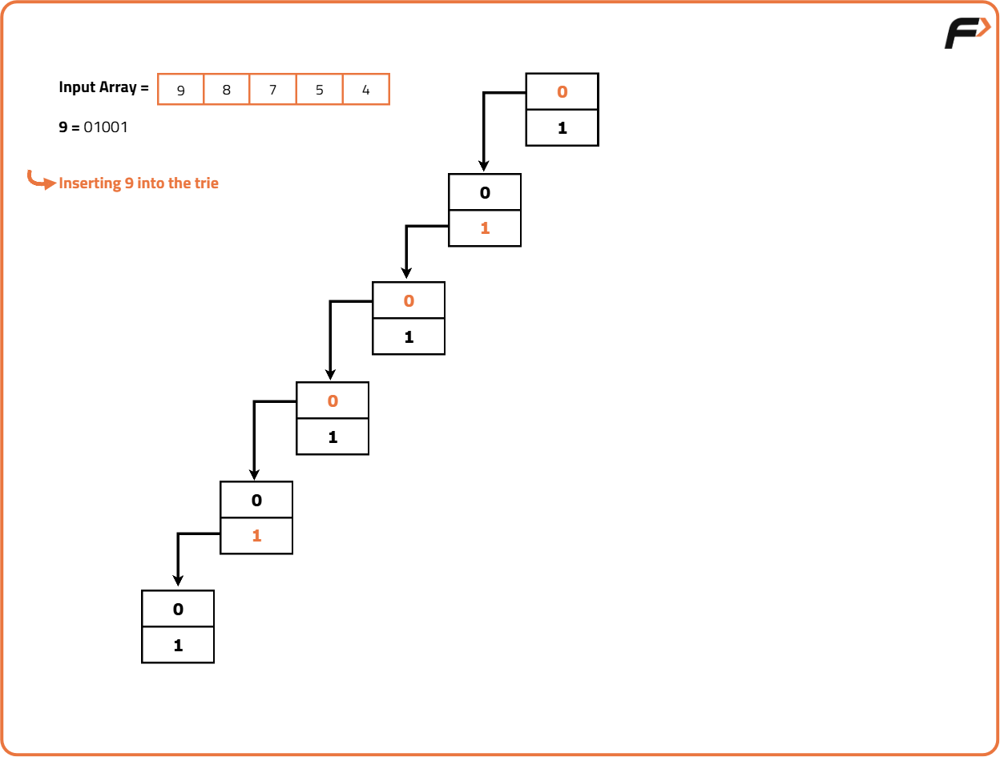
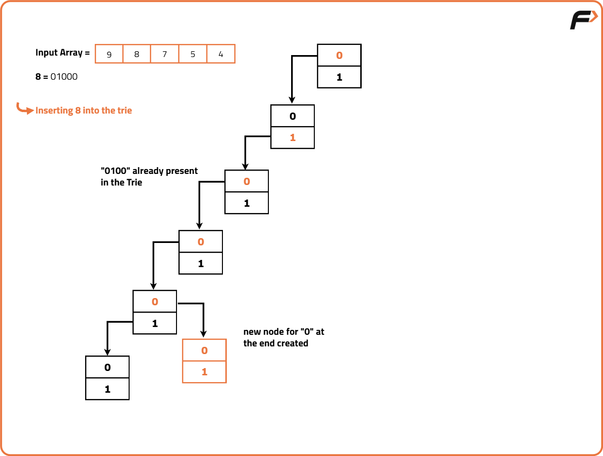
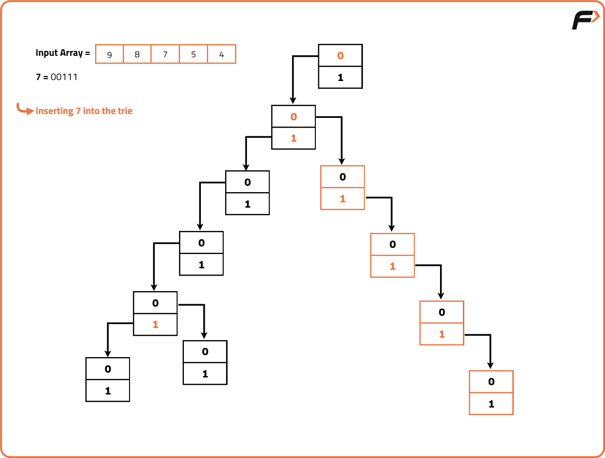

Maximum Xor Queries | Trie
Problem Statement: Given an array of non-negative integers and an array of queries where each query is a pair of two non-negative integers ie. [Xi, Ai], the answer to the ith query is the maximum bitwise XOR value of the Xi with any integer less than or equal to Ai in the array. Return an array consisting of the results of these queries.
Note: If all integers are greater than Ai in the array then the answer to this query will be -1.
Examples
Input: Array: [3, 10, 5, 25, 2, 8], Queries: [(0, 1), (1, 2), (3, 3)] Output: [-1, 3, 1] Explanation: For the first query, there is no integer less than or equal to 1.
For the second query, we can only choose 2. Therefore, maximum possible value is 1 XOR 2 = 3.
For the last query, we can either choose 2 or 3 from the array. Maximum XOR possible is 2 XOR 3 = 1. Input: Array: [13, 3, 15, 5, 12, 6], Queries: [(0, 3), (1, 6), (3, 3)] Output: [3, 7, 0] Explanation: For the first query, we can only choose 3. Therefore, Maximum XOR possible is 3 XOR 0 = 3.
For the second query, we can either choose 5 or 3 from the array. Maximum XOR possible is 1 XOR 6 = 7.
For the last query, we can only choose 3. Therefore, maximum possible value is 3 XOR 3 = 0.
Disclaimer: It's highly recommend trying to solve it before looking at the solution.
Approach
Algorithm
This problem can be efficiently solved using a Trie where each node will represent a bit and paths from the root to the leaves will represent binary numbers.
The XOR operation between two bits results in 1 if the bits are different and 0 if they are the same. To maximise the XOR value between two numbers, we should aim to have as many different bits as possible. This means that for each bit of the number in question, we should try to find the opposite bit in the Trie to maximise the result.
Instead of inserting all numbers into the Trie at once, we can insert numbers incrementally and only up to the value required by the current query. This reduces unnecessary operations.
The XOR operation between two bits results in 1 if the bits are different and 0 if they are the same. To maximise the XOR value between two numbers, we should aim to have as many different bits as possible. This means that for each bit of the number in question, we should try to find the opposite bit in the Trie to maximise the result.
Instead of inserting all numbers into the Trie at once, we can insert numbers incrementally and only up to the value required by the current query. This reduces unnecessary operations.
- Create a Trie Node Structure. This structure represents a node in the Trie.
- It contains an array (‘links’) to store links to child nodes (0 and 1). It also contains methods for inserting numbers into the Trie and finding the maximum XOR value achievable with a given number.
- Initialise a vector to store the result of queries. Sort the array of numbers and queries based on their end points.
- We sort the queries based on their end point so that we insert numbers into the Trie only up to the point where it is necessary for answering the current query.
- Iterate through the array of numbers and queries and for each query, insert numbers into the Tree until the current query’s endpoint then find the maximum XOR value for the query range using the Trie.



Code
#include <bits/stdc++.h>
using namespace std;
// Structure for a trie node
struct Node {
// Array to hold links to child nodes (0 and 1)
Node *links[2];
// Function to check if a child node exists for a given bit
bool containsKey(int ind) {
return (links[ind] != NULL);
}
// Function to get the child node for a given bit
Node* get(int ind) {
return links[ind];
}
// Function to create a link to a child node for a given bit
void put(int ind, Node* node) {
links[ind] = node;
}
};
// Class for Trie operations
class Trie {
private:
// Pointer to the root node
Node* root;
public:
// Constructor to initialize the trie
Trie() {
root = new Node();
}
// Function to insert a number into the trie
void insert(int num) {
// Start from root
Node* node = root;
// Traverse bits from MSB (31) to LSB (0)
for (int i = 31; i >= 0; i--) {
// Extract the current bit
int bit = (num >> i) & 1;
// If path for this bit doesn't exist, create it
if (!node->containsKey(bit)) {
node->put(bit, new Node());
}
// Move to the next node
node = node->get(bit);
}
}
// Function to find maximum XOR for a given number
int findMax(int num) {
// Start from root
Node* node = root;
// Variable to store maximum XOR result
int maxNum = 0;
// Traverse bits from MSB to LSB
for (int i = 31; i >= 0; i--) {
// Extract the current bit
int bit = (num >> i) & 1;
// Try to take the opposite bit for maximizing XOR
if (node->containsKey(!bit)) {
// Set this bit in the result
maxNum = maxNum | (1 << i);
// Move to the opposite branch
node = node->get(!bit);
}
// If opposite bit doesn't exist, move to same bit branch
else {
node = node->get(bit);
}
}
return maxNum;
}
};
// Class containing the solution logic
class Solution {
public:
// Function to perform offline max XOR queries
vector<int> maxXorQueries(vector<int> &arr,
vector<vector<int>> &queries) {
// Result vector to store answers
vector<int> ans(queries.size(), 0);
// Vector to store queries in {m, {x, original_index}} format
vector<pair<int, pair<int,int>>> offlineQueries;
// Sort the array in ascending order
sort(arr.begin(), arr.end());
// Store queries with index for mapping answers later
int index = 0;
for (auto &it: queries) {
offlineQueries.push_back({it[1], {it[0], index++}});
}
// Sort queries based on 'm'
sort(offlineQueries.begin(), offlineQueries.end());
// Pointer for array traversal
int i = 0;
// Size of array
int n = arr.size();
// Initialize the trie
Trie trie;
// Process each query in sorted order of 'm'
for (auto &it : offlineQueries) {
// Insert all elements ≤ m into the trie
while (i < n && arr[i] <= it.first) {
trie.insert(arr[i]);
i++;
}
// If trie has at least one element
if (i != 0)
ans[it.second.second] = trie.findMax(it.second.first);
// If no elements ≤ m, return -1
else
ans[it.second.second] = -1;
}
return ans;
}
};
// Driver function
int main() {
// Example array
vector<int> arr = {3, 10, 5, 25, 2, 8};
// Display the given array
cout << "Given Array: ";
for (int i = 0; i < arr.size(); i++) {
cout << arr[i] << " ";
}
cout << endl;
// Queries in {x, m} format
vector<vector<int>> queries = {
{0, 1}, {1, 2}, {0, 3}, {3, 3}
};
// Display queries
cout << "Queries: ";
for (auto query: queries) {
cout << query[0] << " " << query[1] << ", ";
}
cout << endl;
// Create solution object
Solution obj;
// Get results for queries
vector<int> result = obj.maxXorQueries(arr, queries);
// Display results
cout << "Result of Max XOR Queries:" << endl;
for (int i = 0; i < result.size(); ++i) {
cout << "Query " << i+1 << ": " << result[i] << endl;
}
return 0;
}
Complexity Analysis
Time Complexity: O(32*N + Q(logQ) + 32*Q), for every number in array and query we traverse all its 32 bits to store in the trie. We also sort the queries in ascending order of their end points.Space Complexity: O(32*N + Q) , the space complexity of the Trie depends on the number of bits required to represent the numbers in the input array.